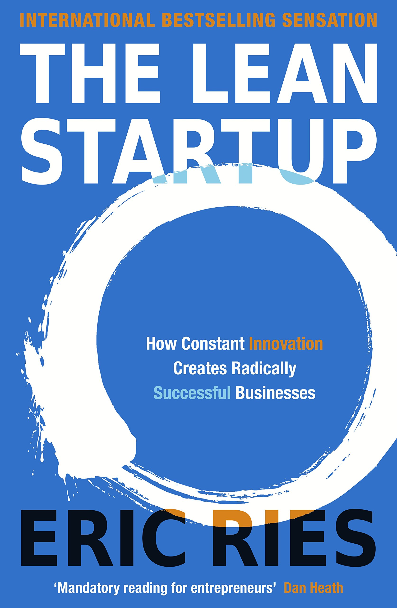

Gauthier Stricker
Lean Product Manager and Full-stack Developer
I've just been graduated from a business school where I've specialized myself into Lean management and Entrepreneurship. After a one-year adventure dedicated to launch my first tech startup, I'm currently taking the train to the Dev World at Le Wagon.
- QQuora
- Github
- Favorite Books -

|
SuperIntelligence - Nick BostromSuperintelligence asks the questions: what happens when machines surpass humans in general intelligence? Will artificial agents save or destroy us? Nick Bostrom lays the foundation for understanding the future of humanity and intelligent life. |
|  |
Lean Startup - Eric RiesMost startups fail. But many of those failures are preventable. The Lean Startup is a new approach being adopted across the globe, changing the way companies are built and new products are launched. |

|
Sapiens - Yuval Noah HarariOne hundred thousand years ago, at least six different species of humans inhabited Earth. Yet today there is only one—homo sapiens. What happened to the others? And what may happen to us? |